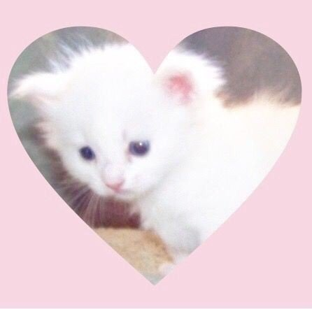

Para: Kristal
Cada día imagino un futuro donde esté junto a ti.
Con mi mano escribiré frases que me lleven a ti.
La tinta fluye hasta hacer un charco de palabras para ti...
¡Sólo escribo el camino hacia nuestro amor!
♡♡ En un mundo lleno de opciones, ¿Crees que puedas elegirme a mi? ♡♡
Cuando estás junto a mi, realmente encuentro divertido cualquier cosa, de
cualquier manera y de todas las formas posibles, no importa si es una pequeñez
ya que reímos a carcajadas por todo. Eso es muy especial para mi.
Cuando no puedo ni siquiera leer mis propios pensamientos, tú estás ahí para
alentarme con palabras que significan mucho para mi. (∗❛ัᴗ❛ั∗)
Yo sólo escribo palabras para quien amo... ¿Es amor si lo hago?
No lo sé pero a mi me gusta pensarlo así, eres la única persona por la que me
tomo el tiempo de hacer este tipo de cosas. (｡ • ́︿ • ̀｡)
Te amo mucho cariño. ♡(∗❛ัᴗ❛ั∗)♡
Feliz un año y un mes uwu. (｡ • ́ᴗ • ̀｡)
